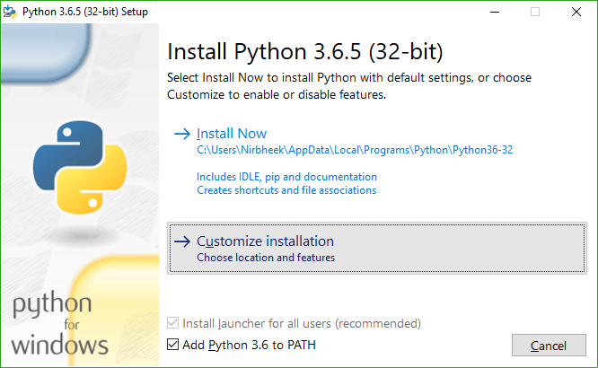
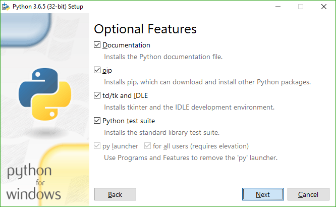
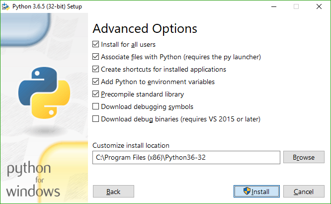

获取Meson#
Meson基于Python3运行，要求Python版本3.10以上。 如果你的操作系统提供包管理器, 你应该用包管理器安装python；如果没有包管理器，你应该在Python主页下载合适的Python3。相关请参阅特殊平台的安装特例.
下载Meson#
Meson发行版可在 GitHub发行页面下载, 你可以在release的解压目录或者git仓库目录里直接运行 ./meson.py ，不需要进行任何特殊操作。
在Windows下,如果你安装Python时没有将Python路径添加到环境变量, 那你应该使用python /path/to/meson.py命令运行Meson,当然python 的版本应该大于3.5。
最新的开发版本的源码可以直接通过Git获得,我们尽可能保证它总是可以正常使用。所有的提交通过pull-request进行，此过程将运行 CI 并且会在多个平台进行测试。
使用pip安装Meson#
Meson在Python包索引中，可通过pip3 install meson命令安装，如果在root环境下，它会在系统范围内安装。
相反,你也可以使用 pip3 install --user meson命令来为user用户单独安装，此过程不需要任何特殊权限. Meson会被安装到~/.local/目录下,所以你需要将 ~/.local/bin添加至你的PATH.
使用MSI安装包安装Meson和Ninja#
我们也在GitHub发行页面提供MSI安装包，可以同时为Windows安装 Meson和Ninja。 它也包含一份嵌入性的Python拷贝, 所以Python module可以不靠任何外部依赖的情况下正如期望般的正常工作。
因为这是新特性，请多留意，如果出现BUG欢迎反馈！
所需依赖#
最主要的, 你需要 Ninja可执行程序 来使用Meson默认的
ninja 后端参数。这个参数可以用于所有平台和工具链包括 GCC, Clang, Visual Studio, MinGW,ICC, ARMCC.
如果可能，你应该使用包管理器提供的版本，否则的话，你应该 在[Ninja发行页面]下载可执行二进制文件。(https://github.com/ninja-build/ninja/releases).
如果你只用Visual Studio后端参数 (--backend=vs)来生成Windows上的Visual Studio工程文件或者XCode后端参数 (--backend=xcode) 生成macOS上的
XCode工程文件, 那么你不需要安装Ninja.
特殊平台的安装特例#
Windows Python3#
安装Python3时,强烈推荐以下安装器选项 (非必须，请结合实际) :



完成这个之后, python 和pip的路径会收录进PATH,你可以使用pip安装Meson. 你也可以在Windows任何终端下直接运行meson而不是不得不输入py -3完整路径去运行 meson.py脚本.
MSYS2 Python3#
如果你使用MSYS2作为你的Windows开发环境,请确信你没有将 msys/python 当作你的默认Python使用. 请使用 mingw32/mingw-w64-i686-python3 或者 mingw64/mingw-w64-x86_64-python3，这取决于MinGW不同的构建对象.